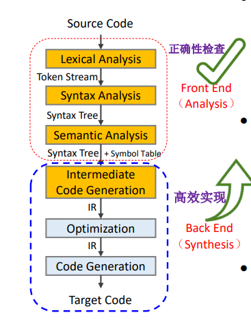
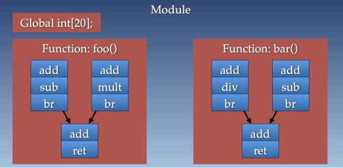
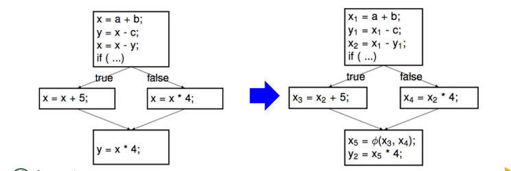
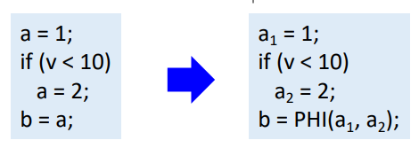

5-中间代码生成
中间代码生成
中间代码生成 AST -> IR
词法分析：源码 -> token 流
语法分析：token流 -> AST 语法分析树
语义分析：AST -> AST + 符号表
中间代码生成：AST 以及类型，作用域等信息 -> 中间代码（Intermediate Representation）
另外遍历 AST
语法制导，语法解析同时生成

IR 总览
每个汇编文件都是一个 Module ，其中含有
全局变量（Global variables）
函数（Functions）
- 基本块（Basic Blocks），里面有若干指令（instructions）

LLVM IR
三地址代码（Three-Address Code TAC） 是仅有两个源操作数，一个目的操作数
静态单赋值，更容易优化
静态单赋值意味着我们必须先定义后使用，并且只赋值一次
LLVM IR 是机器无关的，比如使用 %0
等指代寄存器，后端自己完成虚拟到实际的映射
Three-Address Code （TAC，三地址码）
如下形式，其中X，Y，Z代表变量，常量，或者编译器产生的临时变量
\[X=Y op Z\]
这是给一台”抽象的机器“设计的汇编代码
长表达式转化成多条指令
控制流 -> 跳转
机器无关，操作符是通用的，函数调用改用通用的
call，使用符号名而不是寄存器名
设计目的：机器无关代码优化更简单
对于复杂的 \(x*y+x*y\) 可以使用多条 \(t_1=x*y\) ，\(t_2=x*y\)，\(t_3=t_1+t_2\) 。
可以DFS原来的 AST 得到
AST 中的节点可以转换为中间临时变量
然后可以进行通用的子表达式消除
\(t1=x*y\) ，\(t3=t1+t1\)
使用 AST 可以：
更容易产生 IR
更容易发现机会
常见的
二元赋值 \(x=y\ op\ z\)
一元赋值 \(x=op\ y\)
拷贝 \(x=y\)
无条件跳转 \(goto\ L\)，其中 \(L\) 是 label
条件跳转 \(if(x\ relop\ y) goto \ L\)
过程调用：\(param\ x1\)，\(param\ x2\)，\(param\ x3\)，\(call\ foo,3\)
返回 \(return\ y\)
索引 \(x=y[i]\)
地址和指针 \(x=\&y\) ，\(y=*x\)
静态单赋值（Single Static Asignment SSA）
每个变量仅会被赋值一次，这样改写可以使得每个变量仅会被赋值一次，控制流合并时，可以使用 \(\phi\) 函数合并两个版本

SSA 可以帮助我们不会优化不应该优化的部分，假设我们要进行 DCE（dead code elimination）。SSA可以让数据流显现
phi 函数
phi 指令用来实现 SSA 图中的 \(\phi\) 节点，运行时，phi
指令取的值是当前块执行之前的基本块指定的值。指令
%5 = phi i32 [%7, %4], [%1, %2] 表示如果来自
%4 那么就取 %7，如果来自 %2 就取
%1 。
限制：
必须是基本块的第一条指令
第一个基本块不能用
phi函数开始
